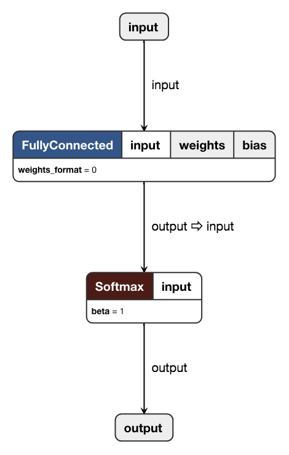

TensorFlow Lite，简称 TF-Lite，是 TensorFlow 针对移动端和嵌入式设备提出的解决方案。在尽量保持精度的情况下，极大地优化模型体积，在移动设备上更快地完成 Inference。
TF-Lite 同时支持浮点数模型和定点量化模型，其中浮点数模型可以直接通过官方提供的 Converter 转换得到，而量化模型则一般需要进行伪量化 + fine-tuning 操作。定点量化模型可以获得更快的推导速度、更小的模型体积，当然精度也下降地更厉害。
TensorFlow 官方提供了一系列 pre-trained 的模型，包括 MobileNet 系列和 Inception 系列等，并且也提供了移动端上模型的参考推导时间。从数据上来看，MobileNetV1 这样的轻量级模型经过量化后，在 iPhone8 上完成一次推导仅需 24.4ms，帧率可以做到 40+ 帧/秒，可以应用到实时视频的 App 里了。
TF-Lite 定点量化的原理可以参考 Google 发表在 CVPR 2018 的论文，见参考文献 1。这里简述一下论文中的方案。
定义 r 为浮点类型的实际值，定义 q 为整型的量化值，量化的模式可以简述为：
q=Sr+Z
反之，量化值也可以恢复为实际浮点值：
r=(q−Z)×S
这里的 S 和 Z 均为量化参数，前者如字面意思所示，Z 表示浮点数的 0 量化后对应的整型值。由于 0 在神经网络中有着特殊的含义，故必须有精确的整型值对应 0。对于量化后的值 q，通过量化参数 (S,Z) 可恢复到所代表的浮点数值。
假设使用 8bit 量化，那么量化后的整型值的范围为 [0,255]，对应的可以表示的浮点数值的范围为：
minmax=(0−Z)×S=(255−Z)×S
对于超过 [min,max] 范围的浮点数值，量化后必须要做截断。min 和 max 可以通过统计的方式得到，网络中的每一层会有不同的 min 和 max；而 [min,max] 范围的浮点数值经过量化后，可以认为数值精度由原先 float 的 24bit 降低到 uint8 的 8bit。
考虑两个 N×N 矩阵 r1 和 r2 的乘法，假设 r3=r1r2。易知：
rα(i,j)=Sα(qα(i,j)−Zα)
则上述的矩阵乘法可以改写为：
S3(q3(i,k)−Z3)=j=1∑NS1(q1(i,j)−Z1)S2(q2(j,k)−Z2)
移项可得：
q3(i,k)=Z3+Mj=1∑N(q1(i,j)−Z1)(q2(j,k)−Z2)
其中：
M=S3S1S2=2nM0
按照经验 0<M<1，故可以预处理为一个大整数除 2n，int32 时 n 可取 31，进而将该浮点数乘法转化为一次整数乘法和一次移位操作。至此矩阵乘法可以在全整数运算下完成。
以 FC 为例，假设输入为 q1，量化参数为 (S1,Z1)；weight 矩阵可以使用上节中的方法量化为整数矩阵 q2 和一组量化参数 (S2,Z2)；而 bias 同样可以量化，使用 int32 存储，其量化参数可以设定为：
Sbias=S1S2,Zbias=0
进而可以将量化后的 bias 加到 q1 和 q2 的乘积结果上。
对于 ReLU 操作，其实精准的控制输出中 Z 的值即可；ReLU6 可以通过类似的方法实现；进而可以将 ReLU 层 fused 到上一层中。
对于量化，TensorFlow 也有官方的样例，但对新手并不友好。为此笔者在 GitHub 上建立了一个非常简单的样例，并且配置了 CI，可以最简化地体验创建一个量化模型的完整步骤。Repo 地址：SF-Zhou/tensorflow-quantization-example
核心步骤包括：
- 创建 FakeQuant Training Graph (train.py)
- 导出 FakeQuant Inference Graph (test.py)
- Freeze Graph & Checkpoint (freeze.sh)
- 导出 TF-Lite 模型 (quantization.sh)
最后会生成后缀为 .tflite 的模型文件。该模型文件可以使用 Netron 工具查看，如下图所示。

TF-Lite 模型可以在 PC 做 Inference 测试，在该 Repo 中也提供了一个简单的示例：load_tflite.py。
如果需要对 TF-Lite 模型进行手术般的修改的话，那就一定要了解 TF-Lite 模型的存储结构。TF-Lite 使用了 Google 提出的 FlatBuffers 序列化协议，简而言之就是二进制版的 JSON。TF-Lite 模型定义文件可以在 TensorFlow 项目中找到：schema.fbs，通过 schema 文件和 FlatBuffers，可以编译得到解析 TF-Lite 模型文件的头文件，进而对模型进行进一步操作。
同样地，笔者在 GitHub 上建立了一个非常简单的样例，并且配置了 CI，以供参考。Repo 地址：SF-Zhou/tflite-model-parse。
事实上，如果已经有其他平台的定点量化模型文件，其实可以直接通过复制 weight + bias 和量化数据的方式，制作相同精度的 TF-Lite 模型。笔者近期在工作中就有类似的尝试，验证的结果也确实是可行的。
- Jacob, Benoit, et al. "Quantization and training of neural networks for efficient integer-arithmetic-only inference." arXiv preprint arXiv:1712.05877 (2017).
{kind=link}